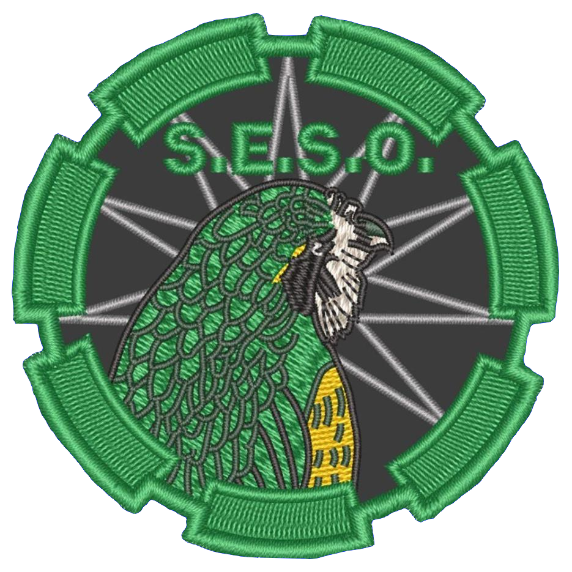

Featured Products
JÄÄKÄRI M

The Jääkäri M daypack is the most popular of the Jääkäri family, capacity approx. 30 litres. The Jääkäri M is an improved model of the Light Border Patrol backpack originally designed for the Finnish Border Guard.
S.E.S.O. - 3 inch Patch
S.E.S.O. - 3 inch Patch - Authorized Purchase ONLY for SESO Personnel